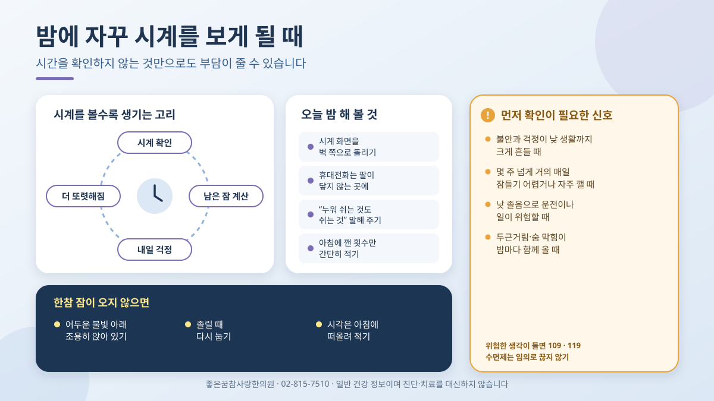

이종호 한의사 감수좋은꿈참사랑한의원 대표원장 (한의사 면허번호 19769)발행 2026-11-22 · 수정 2026-11-24
이 글의 차례
밤에 자꾸 시계를 본다면 시계를 시야에서 치우는 것부터 시작해 보세요. "벌써 세 시네, 몇 시간밖에 못 자겠다" 하는 계산이 시작되면 마음이 바빠지고 몸도 긴장해 다시 잠들기가 더 어려워질 수 있습니다. 시간을 확인하는 습관 자체가 잠을 방해하는 고리가 되기도 합니다.
왜 시계를 보면 잠이 더 멀어질 수 있나요
- 남은 수면 시간을 계산하는 순간 내일에 대한 걱정이 시작되어 몸이 깨어 있는 쪽으로 기울 수 있습니다.
- 휴대전화로 시간을 보면 화면 빛과 알림이 함께 들어와 정신이 더 또렷해질 수 있습니다.
- "또 깼다"는 확인이 반복되면 밤마다 같은 시각에 깨는 것에 더 예민해질 수 있습니다.
- 잠을 잘 자야 한다는 부담이 클수록 오히려 잠이 멀어지는 경우가 있습니다.
먼저 이렇게 여쭙니다
- 밤에 깨면 바로 시계나 휴대전화를 확인하나요?
- 시간을 본 뒤 남은 수면 시간을 계산하게 되나요?
- 다시 잠들기까지 보통 얼마나 걸리나요?
- 깨는 시각이 매일 비슷한가요?
- 이런 밤이 일주일에 며칠 정도 있나요?
일상에서 먼저 해 볼 수 있는 것
- 시계 화면을 벽 쪽으로 돌리거나 눈에 띄지 않는 곳에 두기
- 휴대전화는 알람만 켜 두고 침대에서 팔이 닿지 않는 곳에 두기
- 깨어도 "누워서 쉬는 것만으로도 몸은 쉬고 있다"고 스스로 말해 주기
- 한참 뒤척여도 잠이 오지 않으면 어두운 불빛 아래 조용히 앉아 있다가 졸릴 때 다시 눕기
- 다음 날 아침에 밤에 깬 횟수만 간단히 적어 두기
한의원에서 함께 살필 수 있는 경우
- 밤에 깬 뒤 생각이 꼬리를 물어 다시 잠들기 어려운 경우, 저녁 시간의 긴장과 걱정의 모양을 함께 살핍니다.
- 새벽 같은 시각에 자주 깨는 경우, 낮 활동량과 소화 상태, 몸의 온기를 함께 살핍니다.
- 잠을 못 잘까 하는 걱정 때문에 잠자리가 불편해진 경우, 하루 리듬 전체를 함께 살핍니다.
좋은꿈참사랑한의원에서는 깨는 시각과 그때 드는 생각을 먼저 충분히 듣고, 진맥을 기본으로 하고 필요하다고 판단될 때 설진을 더해 몸의 긴장과 소화 상태를 살핍니다. 상태에 맞춰 침이나 한약 상담 등을 정하고, 귀가 전에는 일주일 동안 해 볼 잠자리 정리 방법을 함께 정합니다.
이렇게 기록해 오시면 상담이 쉬워집니다
- 밤에 깬 횟수와 대략의 시각(아침에 떠올려 적기)
- 깼을 때 주로 드는 생각이나 걱정
- 저녁에 한 일, 커피·술, 잠들기 전 화면 사용 시간
- 복용 중인 수면제나 건강식품
이런 증상은 먼저 확인이 필요합니다
- 불안과 걱정이 잠뿐 아니라 낮 생활까지 크게 흔드는 경우
- 몇 주 넘게 거의 매일 잠들기 어렵거나 자주 깨는 경우
- 낮에 심한 졸음이나 집중 곤란으로 운전이나 일이 위험한 경우
- 가슴 두근거림이나 숨 막힘이 밤마다 함께 오는 경우
복용 중인 수면제는 처방한 의사와 상의 없이 줄이거나 끊지 않습니다. 불안이 극심하거나 위험한 생각이 들면 ☎ 109에 연락하세요.

여쭙는 것
- 밤에 깨면 바로 시계나 휴대전화를 확인하나요?
- 시간을 본 뒤 남은 수면 시간을 계산하게 되나요?
- 다시 잠들기까지 보통 얼마나 걸리나요?
생활에서 해 볼 것
- 시계 화면을 벽 쪽으로 돌리거나 눈에 띄지 않는 곳에 두기
- 휴대전화는 알람만 켜 두고 침대에서 팔이 닿지 않는 곳에 두기
- 깨어도 "누워서 쉬는 것만으로도 몸은 쉬고 있다"고 스스로 말해 주기
한의원에서 함께 살필 것
- 밤에 깬 뒤 생각이 꼬리를 물어 다시 잠들기 어려운 경우, 저녁 시간의 긴장과 걱정…
- 새벽 같은 시각에 자주 깨는 경우, 낮 활동량과 소화 상태, 몸의 온기를 함께 살핍…
- 잠을 못 잘까 하는 걱정 때문에 잠자리가 불편해진 경우, 하루 리듬 전체를 함께 살…
먼저 확인이 필요한 신호
- 불안과 걱정이 잠뿐 아니라 낮 생활까지 크게 흔드는 경우
- 몇 주 넘게 거의 매일 잠들기 어렵거나 자주 깨는 경우
- 낮에 심한 졸음이나 집중 곤란으로 운전이나 일이 위험한 경우
한눈에 보는 표
| 구분 | 핵심 |
|---|---|
| 여쭙는 것 | 밤에 깨면 바로 시계나 휴대전화를 확인하나요? 시간을 본 뒤 남은 수면 시간을 계산하게 되나요? |
| 생활에서 해 볼 것 | 시계 화면을 벽 쪽으로 돌리거나 눈에 띄지 않는 곳에 두기 휴대전화는 알람만 켜 두고 침대에서 팔이 닿지 않는 곳에 두기 |
| 한의원에서 함께 살필 것 | 밤에 깬 뒤 생각이 꼬리를 물어 다시 잠들기 어려운 경우, 저녁 시간의 긴장과 걱정의 모양을 함께 살핍니다. 새벽 같은 시각에 자주 깨는 경우, 낮 활동량과 소화 상태, 몸의 온기를 함께 살핍니다. |
| 먼저 확인이 필요한 신호 | 불안과 걱정이 잠뿐 아니라 낮 생활까지 크게 흔드는 경우 몇 주 넘게 거의 매일 잠들기 어렵거나 자주 깨는 경우 |
자주 묻는 질문
알람도 꺼야 하나요?
일어날 시각을 지키려면 알람은 필요합니다. 밤 동안 시간을 확인하지 않는 것이 목적입니다.
깨어 있는 동안 휴대전화를 봐도 되나요?
화면 빛과 내용이 정신을 깨울 수 있어 권하지 않습니다. 조용한 음악이나 천천히 숨 고르기 정도가 무난합니다.
몇 시에 깼는지 모르면 기록을 어떻게 하나요?
정확한 시각보다 "새벽에 두 번쯤 깼다"처럼 대략 적어도 충분합니다.
이런 고민도 한의원에서 상담하나요?
잠드는 모양과 깨는 모양, 낮의 긴장과 소화를 함께 여쭙고 생활 리듬 속에서 살핍니다.
좋은꿈참사랑한의원은 재진 때 지난번 이야기부터 이어서 여쭙니다. 진료시간과 예약은 오시는 길에서 확인하세요.
어디서 상담받을 수 있나요?
좋은꿈참사랑한의원은 서울 동작구 만양로2길 2 신성빌딩 3층·5층(서울 동작구 상도동, 7호선 상도역 3번 출구 근처)에 있습니다. 한의사 3명(이종호 대표원장, 조영기 수석진료원장, 정원영 진료원장)이 진료합니다. 진료시간은 평일 09:30~20:00(점심 13:00~14:00), 토·일·공휴일 09:30~15:00이며, 방문 전 전화로 확인을 권합니다. 예약은 네이버 예약, 카카오톡 상담, 전화 02-815-7510로 받습니다.
이 글은 일반적인 건강 정보이며 개인의 진단이나 치료를 대신하지 않습니다. 증상이 있거나 복용 중인 약이 있다면 진료를 통해 확인하세요. 치료 효과는 개인마다 다를 수 있습니다.
작성 기준: 일반적으로 알려져 있는 건강 정보를 참고해 정리했습니다(대표원장 감수). 증상 기록은 1~2주 동안 하루 1회, 비슷한 시간에 적어 오시면 지난 상태와 비교하기 쉽습니다.